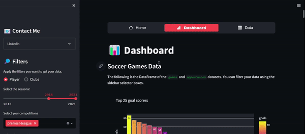

Redes sociales
Madrid Total vive donde se mueve la conversacion.
Madrid Total no entra como cuenta informativa. Entra como entra un fanatico con criterio: deja lectura, deja presencia y se nota cuando aparece.
Collabs & Partnerships
Collabs & Partnerships
He colaborado con multiples marcas en campanas digitales enfocadas en resultados, alcance y engagement real.
Cada colaboracion esta disenada para integrarse de forma organica con mi contenido.

Brand collaborations
Campanas pensadas para integrarse con naturalidad, identidad y resultados reales.- 📩 Email de contacto
- 📊 Media kit en preparacion
Fantasy
Proximamente para suscriptores de MT.
MT Fantasy esta en beta testing y el acceso inicial sera solo para suscriptores de Madrid Total. Cuando abramos la siguiente etapa, se anunciara primero por EN FRIO.